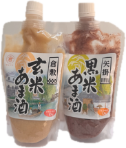
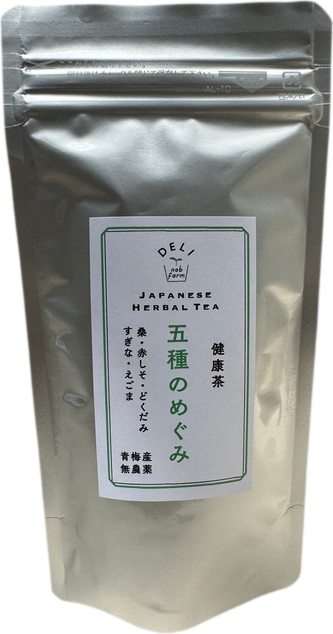
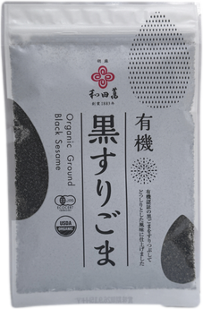
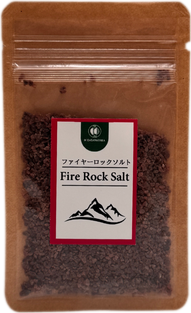
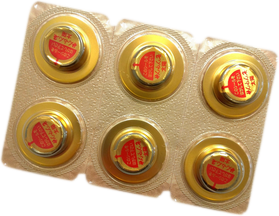
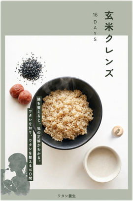

家族のために大切にしてきた
食と健康への関心を、
これからは誰かの役に立つ仕事へ。
子育てが一段落し、これからの自分の時間の使い方や働き方を考え始めた方へ。
まずは1セットを購入してご自身で体験することから始め、その実感を大切にしながらお客様の実践を丁寧に支える「玄米クレンズ」の特約店・代理店を募集しています。
電車通勤をせず、自宅を拠点にオンラインで落ち着いて活動できることに加え、希望する方は対面でのつながりも持てる働き方です。
※まずは仕事内容や条件、支援体制を丁寧にご案内します。「簡単に稼げる」「誰でも成功する」といった勧誘や、販売件数・収入の保証は一切行いません。

誰かに喜ばれる仕事を。
ユーワードでパートナー活動をしてきた50代前後の女性をはじめ、12月からの新プラットフォームへの移行をきっかけに「自分でも何か仕事を始めたい」と考えている方を想定したご案内です。【仮置き・公開前確認】新プラットフォームに関する記載は公開前に正式な情報を確認
玄米クレンズの制度は、「まず自分で1セット体験する ➔ 特約店として何人かのお客様に販売・フォローする ➔ 慣れてきたら、希望に応じて代理店へ（任意）」という流れを基本としています。まずはメインとなる「特約店」としての活動イメージと、お客様へ届く商品をご紹介します。

丁寧さや信頼感が伝わるスターターキット（パッケージイメージ）
ご自身の初回体験や、お客様が受け取った際に、丁寧さや信頼感が伝わるパッケージイメージです。酵素玄米（玄米付きセットの場合）、甘酒、お茶、塩、ごま、お灸、ガイドブックなどを一箱にまとめてお届けします。
・玄米甘酒・黒米甘酒 ／ 五種のめぐみ茶 ／ 還元岩塩・有機黒すりごま
・煙の出ないお灸 ／ 実践ガイドブック（HOW TO BOOK）
assets/item_01〜07.png の上書き、またはドラッグ＆ドロップで個別に入れ替え可能です







| 商品（4区分） | 販売価格の目安（税込） | 特約店仕入価格・差額 |
|---|---|---|
| 16日間・玄米なし 〈自分で炊く方向け〉 |
55,000円 |
説明会・個別相談にてご案内 ※差額は販売価格から仕入価格を引いた金額です。 ※差額から送料、決済手数料、その他の経費がかかる場合があります。 |
| 16日間・玄米48個付き | 55,000円 | |
| 8日間・玄米なし 〈自分で炊く方向け〉 |
33,000円 | |
| 8日間・玄米24個付き | 33,000円 |
・まずは1セットを購入して、ご自身で体験することから始めます。なお、上記の「商品の販売価格」と「特約店になる方の初回体験価格」は混同しないよう区別しており、初回体験価格・対象プログラムは 【仮置き・未決定】公開前に確定 いたします。
・登録料・研修費・月会費などの条件も 【仮置き・未決定】公開前に確定（無料と断定する表記は行いません） となります。
「自分にもできるのか」「資格を取っただけで終わってしまわないか」「お客様へ何を伝えればよいのか」というご不安に応えるため、実際の仕事内容と3つの支援体制を整えています。
※「進行ノウハウ」と「フォロー文面集」は、説明会への参加特典ではなく、特約店になった方へのスタート特典として位置づけています。
特約店として活動を始める前に、最初の1セットはご自身の体験として実践していただきます。その期間は鍼灸師 原麻優子が直接フォローいたしますので、初めての方でもご自身の実感と言葉をもって、大切なお客様へ丁寧にお伝えいただけます。
本人の初回体験は
鍼灸師 原麻優子がフォロー
特約店になる方が最初に1セットを購入して初めて実践する際は、鍼灸師 原麻優子がフォローします。ご自身の体験と実感をもとにお客様へご案内できます。
全体の進め方が分かる
「進行ノウハウ」
16日間／8日間の全体像、相談から開始までの準備、期間中の案内方法、お客様対応のポイント、参加前の確認事項、中断時の対応、終了後のフォロー、注文や送料まで整理された既存資料を活用できます。
LINE等で活用できる
「フォロー文面集」
すでに作成済みの、特約店がお客様へのLINEなどでそのまま活用できる文面集です。開始前から期間中の朝晩連絡、回復食、終了後まで何を伝えればよいか迷いません。
※上記の「取引・注文の流れ」とは別に、実際の商品の配送経路（配送先）は以下の2通りから選べます。
① お客様へ直接配送（オンラインでの活動に対応）
自宅を拠点としたオンラインでの活動に対応できます。
※「お客様への直送」を利用する場合の条件として、特約店ご自身での在庫保管や梱包・発送作業が不要になります。
② 特約店へ配送（対面での手渡し・ご説明に対応）
特約店のもとへ商品を配送し、お客様に取りに来ていただくことで、直接説明したり、お話ししたりする接点を持てます。
ステップアップとしての「代理店」制度（代理店への移行は任意です）
基本の流れは「まず自分で1セット体験する ➔ 特約店として何人かのお客様に販売・フォローする ➔ 慣れてきたら、希望に応じて代理店へ」というステップです。代理店は特約店の仕入れ先となります。
※お客様のご紹介は、件数や売上を保証するものではありません。
※初回10セットの価格、組み合わせ、保管・出荷の詳細、紹介先の選定条件、その他の活動条件は 【仮置き・公開前確認】確認後に掲載 いたします。
興味を持つ
ユーワード加盟店ページやチラシで興味を持つ
内容を知る
募集ページで仕事内容・条件・支援内容を知る
相談申込
説明会または個別相談へ申し込む
条件確認
内容と条件を確認する
自分で体験
1セット購入し、原麻優子のフォローで体験する
活動準備
必要な活動準備を行う
活動開始
特約店として、お客様への案内・販売・フォローを始める
※正式な登録時期や活動開始の基準は未決定です。確定した手続きとして掲載する前に 【仮置き・未決定】公開前に確認・反映 いたします。
ご検討中の方が感じやすい5つのご不安に対し、実際の仕事内容と支援内容を具体的にお答えします。
玄米クレンズ 特約店・代理店
説明会・個別相談のご案内
具体的な特約店・代理店の仕入価格や差額、初回体験セットの詳細、ご自宅での活動イメージについて丁寧にご案内いたします。疑問やご不安な点も、説明会・個別相談にてお気軽にお尋ねください。
・参加特典の有無と内容：【仮置き】説明会・個別相談の参加特典の有無と内容を決定後に反映特約店スタート時は「進行ノウハウ」「LINEフォロー文面集」および初回体験フォローをご用意しています
・運営相談窓口／屋号：【仮置き】掲載する屋号・商品名・連絡先・相談範囲を決定後に反映玄米クレンズ パートナー事務局（監修・初回伴走：鍼灸師 原麻優子）
お申込み窓口
下記のボタンより、説明会または個別相談のお申込みフォームへお進みください。
説明会・個別相談へ申し込む（公式LINE） ⟶
申込先URL・QRコード：【仮置き】申込フォーム・URL・QRコードを決定後に反映お申込み受付後、担当者よりメールまたはLINEにて日程調整のご案内をお送りいたします。
【公開前確認用】未決定事項（仮置き箇所）一覧
※未決定部分は無料と断定せず「仮置き」として明示しています（決定後に反映）
※玄米クレンズは日常の食事を整えて胃腸を休ませるプログラムであり、健康効果や減量効果を断定するものではありません（体験談を全員に起こる結果として紹介することや、不調を「好転反応」と決めつける表現、薬や医療を否定する表現は一切使用いたしません）。
※販売件数や収入を保証する表現は使用しておりません。
🎬 玄米クレンズ 特約店・代理店募集 プロモーション動画
Instagramリール・公式LINE配信用の縦型ショート動画（9:16）と、説明会・Web案内用の横型ワイド動画（16:9）をそのまま再生・保存いただけます。